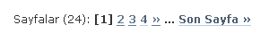
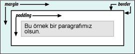

CSS ile ilgili notların sayısı arttıkça takip etmek zor olduğu için CSS'e ayrı bir sayfa açmayı uygun buldum. Üst menüde de gördüğünüz gibi CSS DERSLERİ bölümü eklendi.
devamını okuWordPress İpuçları - 3 : Konuları Sayfalama
WoprdPress'de girdiğimiz konuların sayfalanması için sağdaki gibi ne yaptım?
http://www.lesterchan.net/portfolio/programming.php buradan eklentiyi indirdim.
Daha sonra pagenavi.php dosyasını wp-content/plugins bölümüne koydum ve admin ekranına gidip aktif ettim.
Daha sonra bu sayfalama bölümünün bulunduğu yere bende index.php(sizde farklı dosyalar olabilir. footer ...
devamını okuCSS Dersleri
- Temel CSS Dersleri
- Arayüz Geliştiricilerin Görev Tanımı
- Yeniliklerin Takibi
- Arayüz Geliştiriciler(HTML-ci) Tasarımcıdan Ne İster?
- CSS'e başlamak
- CSS'in Yapısı
- (X)HTML Sayfa Yapısı ve CSS Kullanımı
- Özellik Seçicileri(Attribute Selectors)
- Doğru DOCTYPE Kullanımı
- Pseudo-sınıfları ve Pseudo-elementleri
- CSS Birimleri
- CSS'i Web Sayfalarına Eklemek
- CSS'de Kısaltmalar
- Hızlı CSS ...
- Temel CSS Dersleri
CSS İpuçları - 9
Kodlarınıza yorum satırı ekleyerek daha anlaşılır ve erişilebilir kılın. CSS ile Tablosuz web sayfası tasarımında sayfa bölümleri div ile ayrılır ve bir çok yerde div elementi kullanılır. Divleri açtıktan sonra araya onlarca satır yazı, farklı farklı kodlar girmiş olabilir. Böyle bir durumda div etiketlerinin nerede kapatıldığını kestiremeyebilirsiniz. Bu sorundan kurtulmak ...
devamını okuCSS Kutu Modeli Özellikleri -4
Kutu modeli özelliklerine devam ediyoruz. Sırasıyla aşağıdaki özellikleri inceleyeceğiz:
- Width
- Height
- Float
- Clear

width
Yapısı : width: <deger>
Aldığı Değerler :| | auto | inherit
Başlnagıç değeri: auto
Uygulanabilen elementler: Block-level ve replaced elementler
Kalıtsallık: YokBlok-level ve replaced elementlerin(örn: img, input, textarea vd.) tümü bir genişlik(width) değeri alır. Elementlerin başlangıçtaki genişlik ...
devamını okuCSS Kutu Modeli - Padding Özellikleri
Padding içerik alanı ile kenarlık arasındaki alandır.
padding-top
Yapısı : padding-top: <deger>
Aldığı Değerler :| | inherit
Başlnagıç değeri: 0
Uygulanabilen elementler: tüm elementler
Kalıtsallık: Yokpadding-top özelliği içerik alanı ile üst kenarlık arasındakimesafeyi belirler.
h2 { padding-left: 0.25in; }
Tarayıcı Uyumu
devamını oku
Firefox
Chrome
Safari
Opera
İnternet Explorer
Mobil Tarayıcılar
iOS Safari
Opera Mobile ...(X)HTML İpuçları - 4
Bazı kullanıcı giriş alanlarında(textbox) daha önceden girilen değerlerin hafızada tutulmasını istemeyiz. Örneğin kullanıcı adı vb. Bunun için çok kısa bir kod eklememiz yeterlidir.
CSS Kutu Modeli - Margin Özellikleri
Margin özelliği elementin etrafındaki boşluk olarak tanımlanır. Negatifdeğer alabilir. Tek tek özellikler(margin-top,margin-left vd.) atanabildiğigibi tek bir özellikle(margin) de tanımlama yapılabilir. Margin özelliklerinianlamak için lütfen Box modellerine bir göz atın.
- margin-top
- margin-right
- margin-bottom
- margin-left
- margin
margin-top
Yapısı : margin-top: <deger>
devamını oku
Aldığı Değerler :| | auto
Başlnagıç değeri: 0
Uygulanabilen elementler: tüm ...CSS Sınıflandırma-Liste Özellikleri
Liste özelliği ilk olarak listeleme amaçlı kullanılsa da şimdilerde menü yapımında kullanımı revaçtadır. Burada liste özellikleri yanısıra display ve white-space özelliklerinden de bahsedilecektir.
- list-style
- list-style-type
- list-style-image
- list-style-position
- white-space
- display
list-style-type
Yapısı : list-style-type: <deger>
devamını oku
Aldığı Değerler : disc | circle | square | decimal | lower-roman | upper-roman | lower-alpha | upper-alpha | none
Başlangıç değeri: disc Uygulanabilen elementler: display ...Teşkilatın İki Silahşörü : Soner Yalçın
Türkiye Cumhuriyeti'nin kurumları ile birlikte Osmanlı Devletinin devamı olduğunu gösteren tarihi polisiye tadında bir kitap. Tarihi bilgilerin inandırıcılığı tatmin edici olmasada akıcı anlatım kitabı okunur kılmış. Ayrıntılı bilgi için http://www.netkitap.com/m_ayrinti.asp?id=26840 Kitabın Arka Kapağından: " 'Soner Bey beni arıyormuşsunuz!' Tanışmamız telefonda bu cümleyle başladı ...
devamını oku